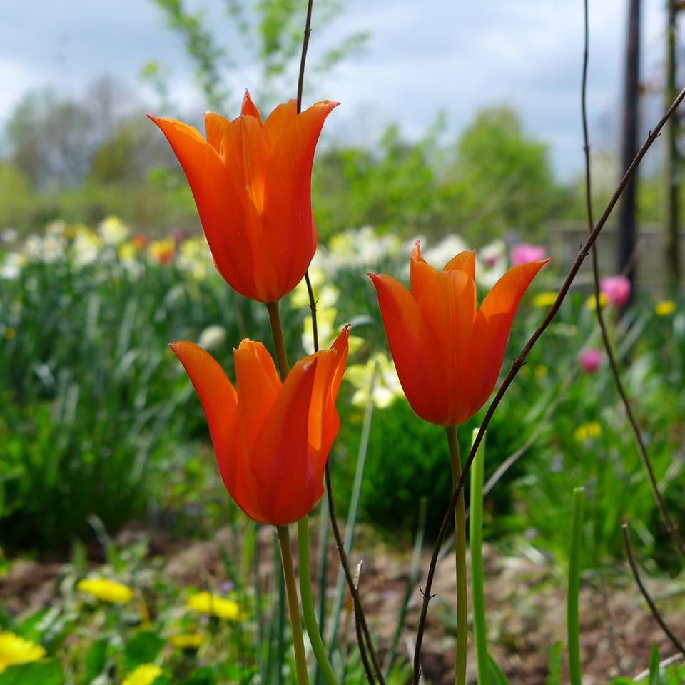

Wanneer ik vraag wat de Bijenakker is, krijg ik niet een antwoord dat in een categorie is te plaatsen. De telers van de akker ontzettend veelzijdig. Zij zijn imkers en verzorgen bloemenvelden en bijenkorven om aan honing, mede en was te komen. Ook geven zij cursussen aan andere imkers over de herintroductie van de
'ouderwetse' ronde bijenkorf. De bloemen worden weer verkocht aan onder ander Bloemkracht in Amelisweerd.
Hiernaast zijn zij onderdeel van de kenniskring Eeuwig Moes, vernoemd naar een koolsoort die altijd weer ergens anders weet op te komen. Deze groep zet zich in ter behoud van historische planten en soorten. Op de Bijenakker worden deze planten geteeld, een deel van de zaden wordt weer terug geven aan deze groep.
Op de akker wordt een enorme diversiteit aan planten en kruiden verbouwd. De telers willen graag mensen laten kennis maken met andere soorten dan de soorten die we kennen uit de supermarkt. Zo groeien er 40 soorten biet op het land, en ook 40 verschillende soorten munt wordt er gekweekt.
Verder werken er vrijwilligers op de akker om de natuur in toom te houden. De bijenakker is 100 % biologisch en natuurlijk. Op verschillende plekken mag de natuur zijn gang gaan, onder het motto een derde cultuur (boomgaard), een derde natuur, en een derde tuingrond. Wanneer je door de tuin loopt ervaar je de natuur ten volle. Heerlijk.
De telers hebben een verrassende hoeveelheid energie en vindingrijkheid, en onze hoop is om een goede en sterke band met ze op te bouwen.
Kom langs!
De Bijenakker is te bezoeken, iedereen is welkom voor een kopje koffie of thee en een bezichtiging. Zij zijn onderdeel van Rustpunt. (http://www.rustpunt.nu/)